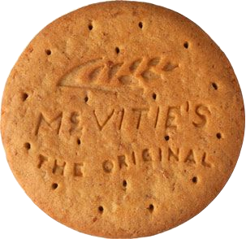

Digestive

A Classic Biscuit. Digestives are top of the tier in the biscuit canon. Are they good for your digestion? No. Were they ever? No. They were originally believed to have antacid properties from the large of amount of sodium bicarbonate in them. Unfortunately, once the biscuits are cooked the baking soda loses carbon dioxide through the heat and becomes sodium carbonate, which doesn’t have the same health benefits on digestion.
They seem like the oldest biscuit in many ways, not just because of their stale, granddaddy-like texture, but because they are the default biscuit. They are neutral, ubiquitous, patriotic. They might not be the first choice, but no sane and moral individual could reject a Digestive. They do not discriminate; they do not condescend. Digestives are what come to mind when, in the throes of chaos and indecision, you must blurt out with veined temple and bleeding eyes the one and only biscuit you can think of.
«